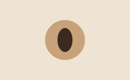
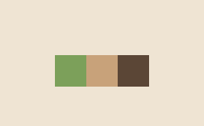

Tostamos cada semana en Ciudad Real. Del café verde a tu taza en menos de diez días.
Ver la tienda
Un tostadero pequeño que trabaja con cooperativas de origen y paga por encima del precio de mercado.
Leer más
Del grano verde a la taza: así decidimos el perfil de tueste de cada origen.
Leer másTostadero Alcor · Empresa ficticia creada para la tarea E3 de DIW · Política de privacidad y cookies · Accesibilidad